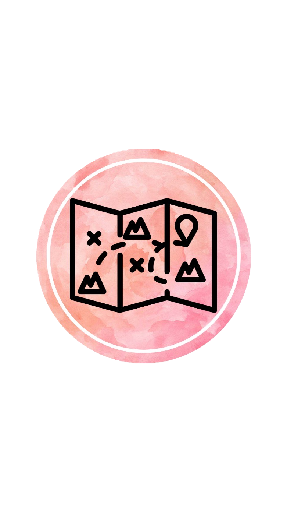
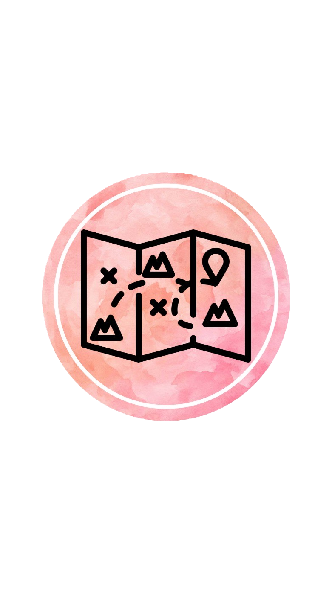

الكويت
اختيار جيد ، سيساعدك هذا النظام على تحديد الوجهة المناسبة ، كما انه سيوفر لك العديد من المزايا لتتعمق في معرفة ابسط التفاصيل عن اختيارك
... لا تقلق ... في حال ان تلك الوجهة كانت غير مناسبة فيمكنك التوجه الى الصفحة الرئيسية بشكل مباشر عن طريق الزر في الاسفل
الكويت أو (رسميًا: دَوْلَةُ الْكُوَيْت)؛ هي دولة عربية تقع في الشرق الأوسط من جنوب غرب القارة الآسيوية، وتحديدًا في الركن الشمالي الغربي للخليج العربي الذي يحدها من الشرق، حيث يحدها من الشمال والغرب جمهورية العراق ومن الجنوب المملكة العربية السعودية، وتبلغ مساحتها الإجمالية 17,818 كيلومتر مربع، في حين يبلغ عدد السكان طبقًا لأخر إحصاء 4,67 مليون نسمة. وجاءت تسمية الكويت إلى تصغير لفظ "كوت" الذي يعني الحصن أو القلعة، وقد شيد بالقرب من الساحل في القرن السابع عشر ميلادي. تأسست مدينة الكويت عام 1613 وتولى الحكم فيها أسرة آل صباح وهم فرع من قبائل العتوب، وكان غالب سكان الكويت منذ تأسيسها يمتهنون الغوص على اللؤلؤ والتجارة البحرية بين الهند وشبه الجزيرة العربية، الأمر الذي ساعد على تحويل الكويت إلى مركز تجاري في شمال الخليج العربي وجعلها ميناء رئيسي لكل من شبه الجزيرة العربية وبلاد الرافدين. وقد ظلت مهنة الغوص على اللؤلؤ العصب الأساسي للاقتصاد الكويتي حتى عام 1946 حينما بدأت الحقبة النفطية بتصدير أول شحنة نفط.